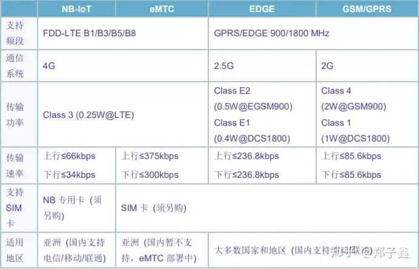

物联网芯片及其厂商
物联网芯片及其厂商
物联网相关的项目
STM32030+GSM800A远程控制开关
升级版STM32F030+SIM7000C 基于NB-IOT网络的MQTT远程控制开关
基于CC2530的zigbee的智能家居系统
基于ESP8266的远程控制插座
基于ESP32的智能家居系统
SIM7000C
对于GSM800没有什么好说的就是传统的2G卡通过GPRS完成网络通信，我主要是下位机的开发，手机APP部分由其他同事开发。

sim7000c支持频段
我想说的是以SIM7000C和SIM7600为代表的NB-IOT模块，虽然这两年铺天盖地的宣传NB-IOT，可我觉得NB-IOT还是存在很多问题的，整个行业我不知道我只是根据我的项目经验说，现阶段NB-IOT很难普及，网上都在说NB-IOT的优点比如功耗低，信号强，支持连接多等，但是他们却都没有说的一个问题就是成本，与4G、5G这些能够马上变现的设备相比，运营商并不愿意把大笔资金投入到这里面来（这时移动的工作人员和我说的，具体真假我也不清楚）。以移动为例他们在开卡的时候可以直接将卡设置成NB-IOT频段，可据说移动的NB-IOT设备并没有铺设的那密集，这也就导致了NB-IOT信号时有时无有时或者有的地方压根搜索不到。
一般的解决办法是将NB-IOT模块设置成双频段工作模式，即支持nb-iot频道也支持4G频段，当信号不好时自动切换。可是甲方给我们的需求是必须使用NB-IOT频段，这也导致最后这个项目交付时各种问题。最后项目也只能搁浅了。
CC2530比较老的一款zigbee芯片，资料多，开发简单没什么好说的。
我最想说的是ESP32，为什么那？因为这一年时间里我一直在用最熟悉，ESP32可以说非常强大，wifi和蓝牙双模，多种外设接口，主频高到240MHZ，这使得他可以轻松的完成语音识别、图像识别等应用。恶而且乐鑫官方也提供了各种程序框架，这使得使用ESP32开发物联网相关项目得心应手。
Xtensa·32-bitLX6单/双核处理器,运算能力高达600 MIPS(除ESP32-S0WD为200 MIPS,ESP32-D2WD为 400 MIPS)
448 KB ROM
520 KB SRAM
16 KB RTC SRAM
QSPI支持多个fash/SRAM
常见的物联网通信技术传统互联网（网线、Wi-Fi、电力载波）移动空中网（2G、4G、5G等）低功率广域网（NB-IoT、LoRaWAN、SigFox）无线局域网（蓝牙、Wi-Fi、ZigBee、LoRa、ZWAVE、2.4G/433MHz无线等）
Wi-Fi
Wi-Fi是一种便捷的无线联网技术，它自身即可融入互联网中与其他相关的服务器或设备通信，开发和应用都非常简单，Wi-Fi相关的物联网芯片也是目前市场出货量很大的物联网无线通信芯片。
当前常见的Wi-Fi物联网芯片高端品牌主要有华为、高通、marvell、TI，中低端品牌有乐鑫、南方硅谷、联盛德、MTK、Realtek等厂家方案。目前乐鑫也有ESP32-S 系列高端 Wi-Fi MCU 产品线了。
蓝牙
蓝牙超低功耗的特性，使其在近几年的物联网应用中突飞猛进。可以与手机互联，加上其新增的Ble mesh特性，解决了蓝牙小规模组网的难题。
现在国外的主流蓝牙芯片有Nordic、silicon labs、Dialog、TI、CSR等方案，国内的方案有泰凌微电子、MTK、上海博通等，在国产芯片崛起的今天，还有一大批蓝牙芯片厂家正在如雨后春笋一样涌出。
ZigBee
ZigBee是一个非常成熟的低功耗局域网组网技术，最新版本已经迭代到ZigBee 3.0协议栈。凭借其成熟的、可靠的组网特性，在物联网无线通信中依然占有一席之地，当前广泛用于智能家居行业。
常见的国外ZigBee方案有TI、NXP、silicon labs等方案，国内做Zigbee的相对较少，泰凌微电子是比较成熟的方案。
LoRa
LoRa术一般情况下用于低速率远距离通信场景，一般有两种应用方式。
第一种：LoRaWAN，是一种低功耗广域网组网技术，其采用标准的LoRaWAN通信协议，通过标准的LaRa WAN网关接入专用的LoRaWAN服务器，实现节点到网络之间的数据通信。其接入数量大，通信性能强，但部署成本偏高，国内阿里推广的LinkWAN就是在其技术基础上演化未来的。
第二种，私有LoRa通信，通常用于区域范围内的互通，优势是成本低，劣势是接入数量受限。
不管采用那种应用方式都离不开使用LoRa技术，该技术是国外Semtech公司的专利。其国内的LoRa芯片也是获取该公司的授权才能生产销售，例如：ASR、ST、群登等SOC芯片方案。
私有无线通信技术
其他私有无线通信技术如Nordic的NRF24l01P，silicon labs的SI4463/SI4438，TI 的CC1310，国产方案CMT2300A，东软载波HW3000等私有无线，靠着一些独有的特性，例如：高速率、认知度、性价比，依然承载着相当大的市场。
NB-IoT/GPRS/4G/5G
据消息，GPRS最大的运营商中国移动即将于年底停止发卡，其取代他的正是NB-IoT、4G CAT1。
当前NB-IoT芯片常见的方案厂家有华为海思、MTK、RDA、移芯、芯翼、大鱼等。4G CAT1成熟方案选择相对较少，主要有华为海思、RDA、ASR方案，而高通以其低性价比基本已经排除在中国市场。